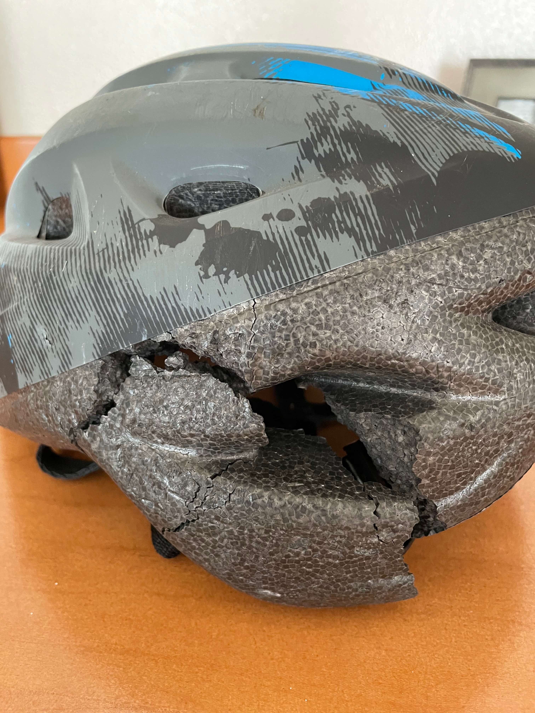
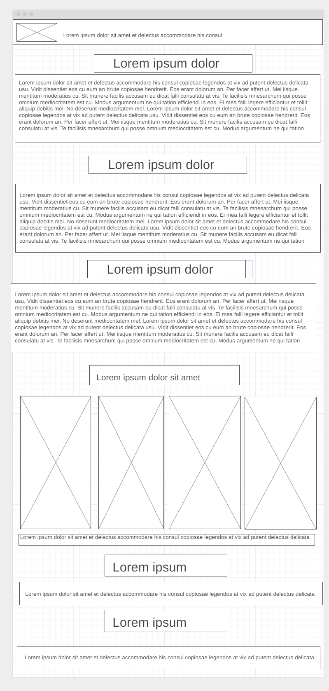

Overview
Purpose
My goal with this website it to house all of my photos that I have taken, along with all of the stories I have to go along with all of my rides
Audience
I want anyone who is friends with me or interested in longboarding to see the site and what fun can be had longboarding
Branding
Website Logo
Content
Welcome!
If you're curious about where to start and you are reading this then you are at the right starting point. On this home page you will find all of the links to the other pages on my site, along with a small description of what you will find on each page. You can stay here and read about me and why I made this site, see a few photos of my boards, or read about some of my advice for getting started. Including some of my personal rules to doing anything with these boards. Once you are satisfied on this page you can use the navigation bar at the top of the page, or the embedded links to check out my other pages. There's lots of content to see so go and take a look around and find what you like best. If any of this interests you maybe you could try longboarding, skateboarding or (eSkating) for yourself. It doesn't take much to get started and is a great way to get outside and make new friends.
About Me
Starting with the basics, Hello I'm Braden R and I am 20 years old and have been interested in electric skateboarding since I was about 16 years old. My first experience was at a friend's house after his parents got him an electric skateboard for Christmas; That following summer while I was visiting he showed me and I was immediately hooked. I thought that it was one of the coolest things I had ever seen or ridden. A few months later I bought my own and started riding on my own. A few years later and I currently own two electric skateboards, along with two longboards and a single skateboard. As along my journey to this point my hobby has expanded.
Why I Made This Site
I made this site in hopes of peaking people's interest in my hobby of riding longboards and eSkates. On this site is all of my gear and lots of photos of the many rides I have been on since I started riding in late 2019. Since then I have seen many sites and put many hours into riding. If you're interested in what there is to do and see, check out the gallery to see what you're missing out on. If you are curious about where to get started check out my gear section for lots of good starter information.
My Boards
From left to right: Goldcoast longboard, Unknown longboard, Skatebolt Breeze II, Tynee Explorer, my first built skateboard.
What I Use Them For
I have two main uses for the boards, fun and transportation. The Tynee Explorer I use as my main mode of travel when I don't need to take my car. It being the newest it has mostly replaced the Breeze II as my commuter board. The rest of the boards I use just for fun and to get a little bit of exercise in on a good day.
My Stories
On this page you can find short stories about some of my longboarding adventures, from great scenes to gnarly crashes with a few photos for each.
The Gallery
Here you will find every photo and video that I have taken while riding. Each organized by place with addresses to each location if you ever want to go there yourself.
My Gear
On this page you will find a list of all of my gear and where to buy most of it if you are interested in getting something similar to what I have.
Style Guide
Color Palette
Palette URL:
https://coolors.co/a4a29f-a2b0a1-600e0e-588182| Primary | Secondary | Accent 1 | Accent 2 |
|---|---|---|---|
| #A4A29F | #A2B0A1 | #588182 | #600E0E |
Typography
Heading Font: Teko (weight 600)
Paragraph Font: Red Hat Display (weight 600)
Normal paragraph example
Make sure you always wear your helmet, someday it may save your life. There was one fall that I had that having a helmet saved my life.
Colored paragraph example
It is also a good idea to wear things such as knee and elbow pads, along with wrist guards to help prevent minor injuries and a few more major ones.
Navigation
Site Map
Wireframes
Home
Gallery
My Stories